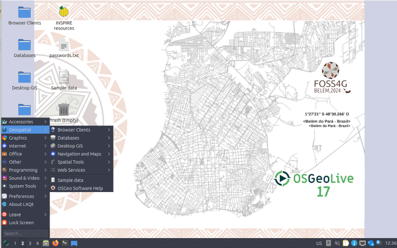

Tervetuloa OSGeoLive 13.0¶
OSGeoLive on omavarainen Lubuntuun perustuva virtuaalikone, USB-muistitikku tai DVD-levy, jonka avulla voi kokeilla ja käyttää laajaa joukkoa avoimen lähdekoodin paikkatieto-ohjelmia ilman että ohjelmia pitäisi asentaa. OSGeoLive koostuu täysin avoimista ja vapaista ohjelmistoista, mistä syystä sitä voidaan vapaasti jakaa, kopioida sekä levittää eteenpäin.
{kind=link}
Se tarjoaa esiasennettuja sovelluksia paikkatiedon eri käyttötapauksiin, mukaan lukien tietovarastot, julkaisu, katselu, analysointi sekä tiedon muokkaus. Se sisältää myös esimerkkiaineistoja ja dokumentaation.
Voi kokeilla sovelluksia seuraavalla tavalla:
- Laita USB-muistitikku tai DVD-levy tietokoneeseen tai virtuaalikoneeseen.
- Uudelleenkäynnistä tietokoneesi (mikäli tarpeellista varmista laitteiden käynnistysjärjestys).
- Paina ”Enter” aloittaaksesi ja sisäänkirjautuaksesi.
- Valitse ja avaa tai aja sovelluksia ”Geospatial” valikosta.
OSGeoLive on OSGeo Säätiön hanke. OSGeo säätiö on voittoa tavoittelematon paikkatiedon avoimen lähdekoodin ohjelmistojen kehitystä, edistämistä ja koulutusta tukeva järjestö.
Esittely¶
Kaikki OSGeoLive-sovellutukset esittelevä puolen tunnin esitys on saatavilla esityskalvoineen, skripteineen ja abstrakteineen.